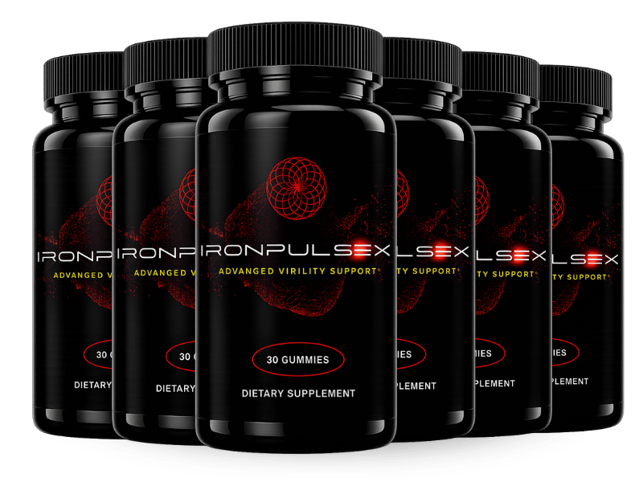

What Is IronPulseX And How Does It Work?
Imagine the quiet sigh of a morning routine where the body feels a little slower, the mind a shade foggier, and the bedroom a place of polite excuses rather than confident performance. That subtle, invisible decline is not a myth; it is the result of vascular insufficiency, the hidden traffic jam that keeps oxygen and nutrients from reaching the muscles and the most sensitive parts of the male anatomy. Over weeks and months the effect compounds, turning what once felt effortless into a daily frustration.
The core of the problem lies in the blood vessels themselves. When the inner lining of arteries becomes stiff or clogged with oxidative debris, nitric oxide – the natural vasodilator that signals vessels to relax – cannot do its job. Without enough nitric oxide, blood flow stalls, and the penis receives less of the pressure surge needed for a firm erection. This physiological pause is why many men experience a gradual loss of stamina even when hormone levels appear normal.
Most men try to fix the issue with quick fixes: prescription pills that force blood flow, or lifestyle hacks that ignore the underlying vascular health. While a single prescription can produce a temporary spike, it does not repair the damaged endothelial cells or replenish the nitric oxide reserves. Likewise, generic multivitamins lack the precise dosages needed to reverse the oxidative wear that fuels the problem. The result is a cycle of short‑lived relief followed by deeper disappointment.
Enter IronPulseX, a scientifically calibrated blend that targets the exact mechanisms that cause vascular insufficiency. Each ingredient was chosen for its proven ability to boost nitric oxide production, protect blood vessel walls, and balance stress hormones that sabotage circulation. The formula works from the inside out, gently coaxing the endothelium to heal while supplying the raw materials the body needs to sustain healthy blood flow.
The product is delivered in a convenient, once‑daily capsule that dissolves quickly in the stomach, allowing the nutrients to enter the bloodstream within minutes. The manufacturers have used a patented liposomal delivery system that enhances bioavailability, meaning more of the active compounds reach the target tissues instead of being lost in digestion. This design eliminates the need for multiple pills or complicated timing schedules.
Realistic expectations are essential. IronPulseX is not a magic wand that delivers instant results; it is a nutritional program that rebuilds vascular health over time. Most users report noticeable improvements after 30 days, with peak benefits emerging between 60 and 90 days of consistent use. Patience, combined with the right dosage, is the key to unlocking the full potential of the formula.
IronPulseX Ingredients
The six‑component blend in IronPulseX is more than a random assortment of herbs; it is a synergistic orchestra where each player amplifies the others. Clinical research supports the exact dosages used, ensuring that the body receives enough of each active compound to trigger measurable physiological change. Together they address cortisol spikes, nitric oxide deficits, and oxidative stress – the three pillars that underlie vascular insufficiency and diminished libido.
- Tongkat Ali (200mg Extract) (200mg): Tongkat Ali is the most‑researched herb for natural testosterone support. Clinical trials show that a 200mg dose raises free testosterone, lowers cortisol, and improves sexual desire in men over forty. The extract works by stimulating Leydig cells, which produce testosterone, while also modulating the hypothalamic‑pituitary‑adrenal axis.
- Ashwagandha (100mg Extract) (100mg): Ashwagandha is a potent adaptogen that can cut cortisol levels by up to twenty‑eight percent, according to peer‑reviewed studies. Lower cortisol reduces vasoconstriction and frees up nitric oxide pathways, while the herb also modestly boosts testosterone and overall sexual satisfaction.
- Maca Root (100mg Extract) (100mg): Maca Root has been used by Andean warriors for centuries to sustain stamina. Modern trials demonstrate that a 100mg dose heightens sexual desire independent of testosterone, acting directly on the brain's libido centers and improving erectile function even when hormone panels are normal.
- Horny Goat Weed (100mg Extract) (100mg): Horny Goat Weed contains icariin, a natural PDE5 inhibitor that mirrors the action of prescription drugs without synthetic chemicals. The 100mg dose has been shown to improve blood flow to the penile tissue, supporting stronger and longer erections.
- Beet Root (50mg Extract) (50mg): Beet Root is rich in dietary nitrates, which the body converts into nitric oxide. Clinical research confirms that a 50mg beet extract boosts nitric oxide levels, enhancing vasodilation and overall exercise performance, which translates into better erectile quality.
- Grape Seed Extract (50mg Extract) (50mg): Grape Seed Extract supplies oligomeric proanthocyanidins (OPCs), powerful antioxidants that protect endothelial cells from oxidative damage. Studies link a 50mg dose to healthier blood pressure and reduced arterial stiffness, both critical for sustained penile blood flow.
- L-Arginine HCl (50mg) (50mg): L‑Arginine is the direct precursor to nitric oxide. A 50mg dose has been demonstrated to improve erectile function in men with mild to moderate issues by feeding the nitric oxide synthesis pathway, complementing the nitrate boost from beet root.
IronPulseX contains zero cheap fillers, artificial binders, or synthetic hormones. Every batch is produced in a FDA‑registered, cGMP‑certified facility in the United States, with third‑party testing to verify purity and potency. The result is a clean, potent formula that delivers exactly what the label promises.
IronPulseX Safety & Side Effects
All of the ingredients in IronPulseX are nutrients that the human body already recognizes and utilizes. Tongkat Ali, Ashwagandha, Maca, and the other botanicals have been consumed for centuries in traditional diets, and the dosages used match those proven safe in clinical trials. Because the formula relies on natural pathways rather than synthetic pharmaceuticals, the risk of adverse reactions is minimal.
Contrast this gentle nutritional replenishment with prescription erectile drugs that force blood vessels to dilate through powerful chemicals. Those medications can cause headaches, flushing, or even dangerous drops in blood pressure for susceptible individuals. IronPulseX, by supporting the body’s own nitric oxide production, avoids those abrupt spikes and provides a smoother, more sustainable flow.
Manufacturing takes place in a U.S. cGMP‑certified facility where each batch undergoes rigorous purity testing for contaminants, heavy metals, and microbial load. To date, no credible reports of serious side effects have emerged from users who follow the recommended dosage. As always, individuals with pre‑existing medical conditions or those taking prescription medication should consult a healthcare professional before starting any new supplement.
Medical Disclaimer: The information provided here is for educational purposes only and is not intended to diagnose, treat, cure, or prevent any disease. Always seek the advice of a qualified health provider with any questions you may have regarding a medical condition.
Recommended Dosage & How To Take
For optimal results, take one capsule of IronPulseX each morning with a full glass of water and a balanced meal that contains some healthy fats. The presence of dietary fat enhances the absorption of the lipophilic compounds, ensuring that the active ingredients reach the bloodstream efficiently.
Consistency is crucial because the formula works at the cellular level. It typically takes 60 to 90 days of uninterrupted daily use for the endothelial cells to fully respond, rebuild, and sustain higher nitric oxide output. Skipping days resets the progress and can delay the visible benefits.
Many users find that purchasing the multi‑bottle bundles provides the best value, as the savings allow them to maintain the protocol without interruption. The bundles are shipped in sealed, tamper‑evident bottles that preserve potency for the full shelf life.
Never exceed the single daily dose. Higher amounts do not accelerate results and may increase the likelihood of mild gastrointestinal discomfort. If you experience any unusual symptoms, discontinue use and consult a medical professional.
IronPulseX – 60-Day 100% Satisfaction Guarantee
IronPulseX is backed by a no‑risk, 60‑day money‑back guarantee that reflects the manufacturer’s confidence in the product’s efficacy. If you do not notice a measurable improvement in stamina, confidence, or overall vascular health within the first two months, you can request a full refund.
The 60‑day window is deliberately aligned with the biological timeline needed for vascular remodeling. Most clinical studies show that meaningful changes in nitric oxide production and endothelial function become evident after four to eight weeks, so the guarantee covers the entire transformation period.
To claim a refund, simply contact the customer‑service team through the official website, provide your order number, and follow the short return instructions. The process is hassle‑free, with no hidden fees or required explanations, ensuring that you can try IronPulseX with complete peace of mind.
IronPulseX Verified Customer Reviews
 James Whitaker
Austin, TX
Verified Purchase – 6 Bottles
James Whitaker
Austin, TX
Verified Purchase – 6 Bottles
"I work as a high‑school football coach, and after age 45 I started feeling like my energy tank was always half empty. The locker room jokes about my 'quiet mornings' turned into personal embarrassment when I couldn't keep up with the drills. I tried IronPulseX for the first time in early March and noticed a subtle lift in my mood after two weeks. By week five my workouts felt easier, my heart rate recovered faster, and the bedroom finally felt like the confident place it used to be. Six months later I’m still coaching, still playing pickup games, and my wife says I’m the most present partner she’s ever had."
 Luis Martinez
San Diego, CA
Verified Purchase – 3 Bottles
Luis Martinez
San Diego, CA
Verified Purchase – 3 Bottles
"As a freelance graphic designer, my days are long and my stress levels are high. I was constantly battling cortisol spikes that left me irritable and, frankly, unable to enjoy intimacy with my partner. A friend recommended IronPulseX, and I was skeptical but decided to give it a try. After three weeks I felt my stress melt away during client calls, and by the fourth week my blood pressure readings were lower than they had been in years. The biggest surprise was the renewed spark in my relationship – my wife told me I seemed more attentive and energetic, and that alone is worth the investment."
 Markus Jensen
Portland, OR
Verified Purchase – 6 Bottles
Markus Jensen
Portland, OR
Verified Purchase – 6 Bottles
"Running a small construction business means I’m on my feet from sunrise to sunset, and at 52 I started noticing a nagging fatigue that no amount of coffee could fix. The worst part was the quiet frustration in the bedroom that made me feel less like a leader and more like a shadow. I ordered IronPulseX after reading the ingredient list and was impressed by the science behind each herb. Within three weeks my morning runs felt smoother, my recovery time shortened, and my confidence in the bedroom returned. Now, after two full cycles, I’m recommending the product to every crew member who mentions feeling 'run down.'"
IronPulseX – Where To Buy
IronPulseX is sold exclusively through the official manufacturer website. Buying directly guarantees that you receive a fresh, sealed bottle that has been stored under optimal conditions, preserving the potency of each botanical extract.
Beware of counterfeit or expired products that circulate on third‑party marketplaces such as Amazon, eBay, or Walmart. Those bottles often contain filler fillers, reduced dosages, or even harmful contaminants, and they are not covered by the 60‑day money‑back guarantee.
The official site also tracks each order in a secure database, which is required for the refund process. If you purchase elsewhere, you lose the ability to register your bottle, and any claim for a refund will be denied. Stick with the authorized channel to protect your health and your wallet.
Is IronPulseX Legit Or A Scam?
No – IronPulseX is not a scam. The formula is fully disclosed, with each ingredient listed at a clinically validated dose. The company provides transparent manufacturing information, third‑party lab results, and a straightforward refund policy, all of which are hallmarks of a legitimate supplement brand.
Unlike miracle‑cure ads that promise overnight erections or instant hormone spikes, IronPulseX acknowledges that real change takes time. The marketing focuses on rebuilding vascular health, reducing cortisol, and supporting natural testosterone production – outcomes that are supported by peer‑reviewed studies, not by hype.
Because the product relies on natural, well‑studied compounds and is produced in a cGMP‑certified facility, the risk is low and the potential benefit is genuine. For men who are tired of empty promises, IronPulseX offers a science‑backed, low‑risk pathway to reclaiming vitality.

For the safest purchase and current promotional bundle pricing, use the official IronPulseX website.